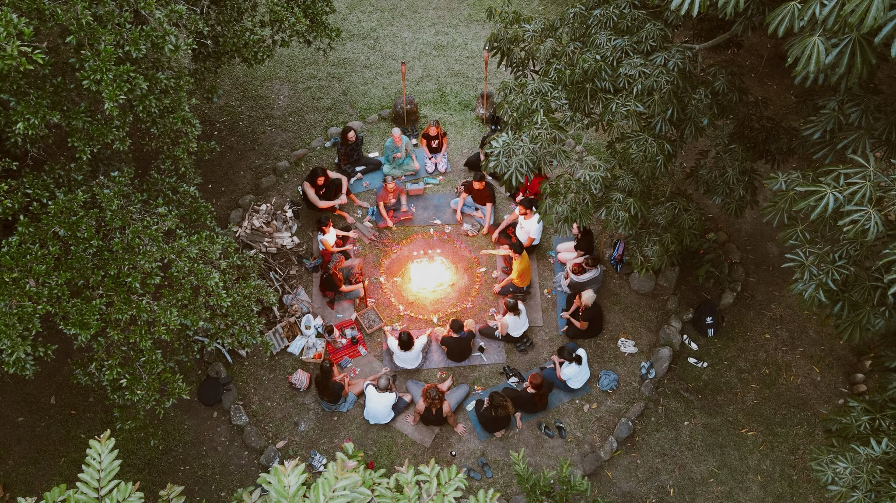
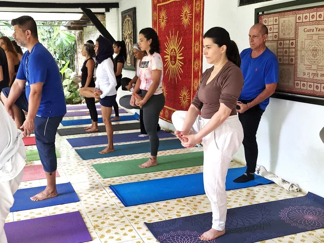
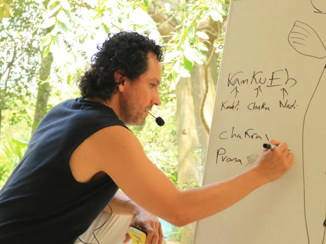
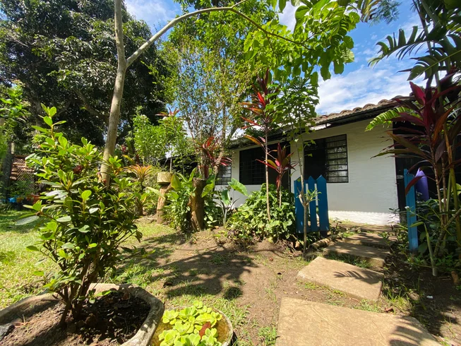
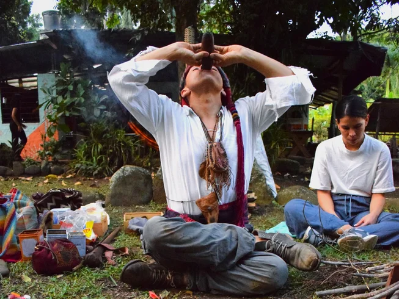

Tantra Kundalini
Filosofía y técnicas de meditación de Swami Satyananda Saraswati (Bihar School of Yoga): asana, vinyasa, pranayama, kriya, mudras, bandhas, yoga nidra, prana vidya y meditación.

21 días de inmersión profunda en yoga, meditación, biomecánica y la disciplina maya del Kankueb. Una metodología única creada por C.R. Kan, en el corazón verde de Cali, Colombia.
Un enfoque del yoga distinto: más profundo, sencillo y adaptable a las condiciones físicas y mentales de cada persona. Prescindiendo de visiones religiosas y pseudo-espirituales, IKY integra el yoga clásico con la biomecánica y la neurociencia modernas.
Filosofía y técnicas de meditación de Swami Satyananda Saraswati (Bihar School of Yoga): asana, vinyasa, pranayama, kriya, mudras, bandhas, yoga nidra, prana vidya y meditación.
Sistema avanzado de autoconciencia a través del movimiento. Logra posturas avanzadas mientras aumentas flexibilidad y agilidad, y resuelves limitaciones y lesiones osteomusculares.
Aprendizaje experiencial y profundo de la anatomía y la biomecánica aplicadas al yoga, con visión científica y sin riesgos físicos.
El sistema energético de las tradiciones mesoamericanas prehispánicas. Conviértete en uno de los privilegiados profesores de "yoga maya" y Kankueb Dance.



Una pedagogía que asocia cada práctica a uno de los cuatro aspectos del ser, para que aprendas y enseñes de forma fácil, creativa y rápida.

Kankueb, prana vidya, kriyas y manejo de la energía para el empoderamiento personal.
Sistema avanzado de Drishtis que estimulan el sistema nervioso. Historia y filosofía del yoga y del Kankueb maya, anatomía y biomecánica con visión científica y crítica.
Organización y alineación avanzada de asanas y secuencias posturales, con base en el manejo de apoyos, la organización del esqueleto y la relajación muscular.
Los Drishtis avanzados aplicados a asanas, pranayamas, mudras, meditación y Kankueb Dance mejoran tu gestión emocional y tu forma de relacionarte.
Durante 21 días recibirás las técnicas más sofisticadas y funcionales del yoga contemporáneo, junto al conocimiento exclusivo del Kankueb Maya.

Certificación internacional. Otorgada por el Instituto de Altos Estudios en Yoga IKY, con énfasis en Kankueb maya y biomecánica. Registro internacional permanente (RIPEY.NET).
Única escuela en el mundo que integra tradición, ciencia y movimiento con énfasis real en biomecánica.
Única en el planeta que enseña el "yoga maya" y el Kankueb, y la basada ampliamente en Antar Drishti.
Aprendizaje profundo, avanzado, rápido y placentero, sin riesgos físicos.
Maestro auténtico de linaje con 30 años de práctica y experiencia internacional.
Plataforma educativa propia con recursos académicos en texto, audio y video, de por vida.
Precio inigualable: trabajamos para democratizar el desarrollo humano. Sin costos innecesarios.
Un centro de yoga rural al sur de Cali, rodeado de naturaleza, privado y tranquilo. Elige la acomodación que más resuene contigo.

Jardín privado, tina, cama doble y hamacas. La experiencia más exclusiva.

Tu propio espacio cálido, con baño y ducha compartidos.

Amplios espacios cubiertos para asana, meditación y los talleres diarios.

La formación de +300 horas, las comidas, los talleres y la certificación son los mismos para todos. Lo único que cambia es cómo quieres descansar.
Reserva con solo el 10%. Separas tu cupo con el 10% y pagas el saldo a tu llegada. Grupos reducidos de máximo 35 personas — asegura tu lugar con anticipación.
Reservar

Maestro de Tantra Kundalini Yoga bajo la inspiración de su gurú Swami Satyananda Saraswati. Certificado en Yoga Kai y Kamal Be Maya, maestro del Método Feldenkrais® y especialista en biomecánica aplicada al yoga.
El saldo lo pagas a tu llegada. Grupos reducidos — asegura tu lugar.